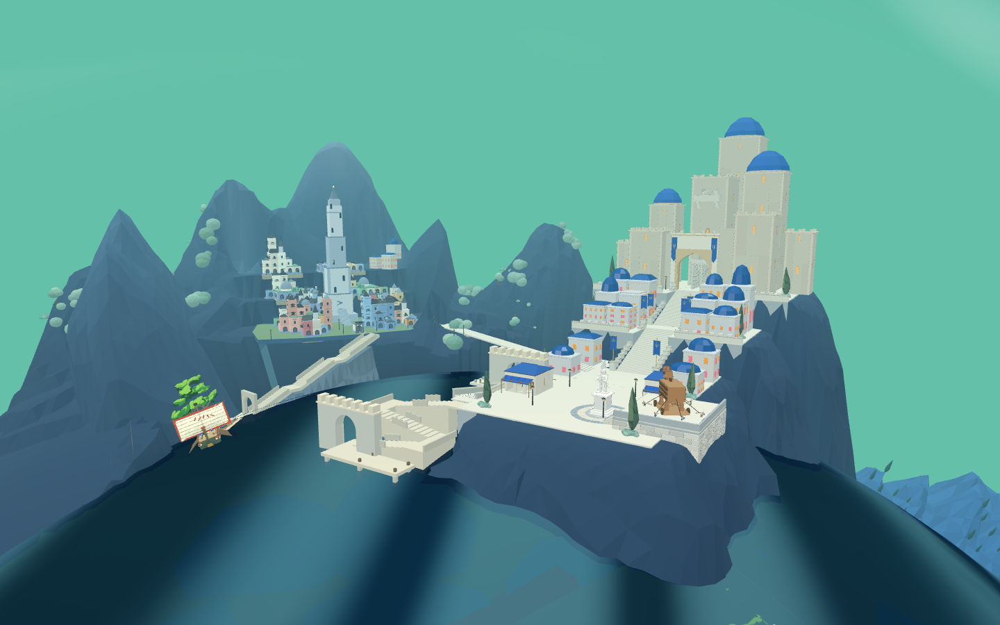
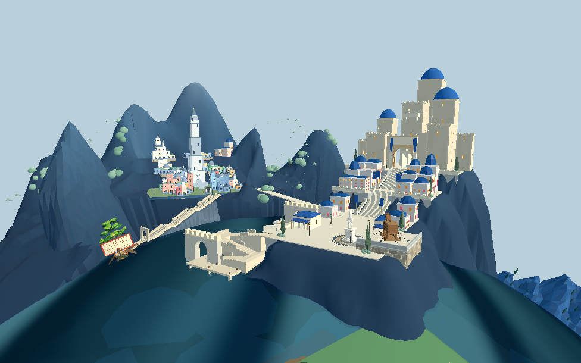
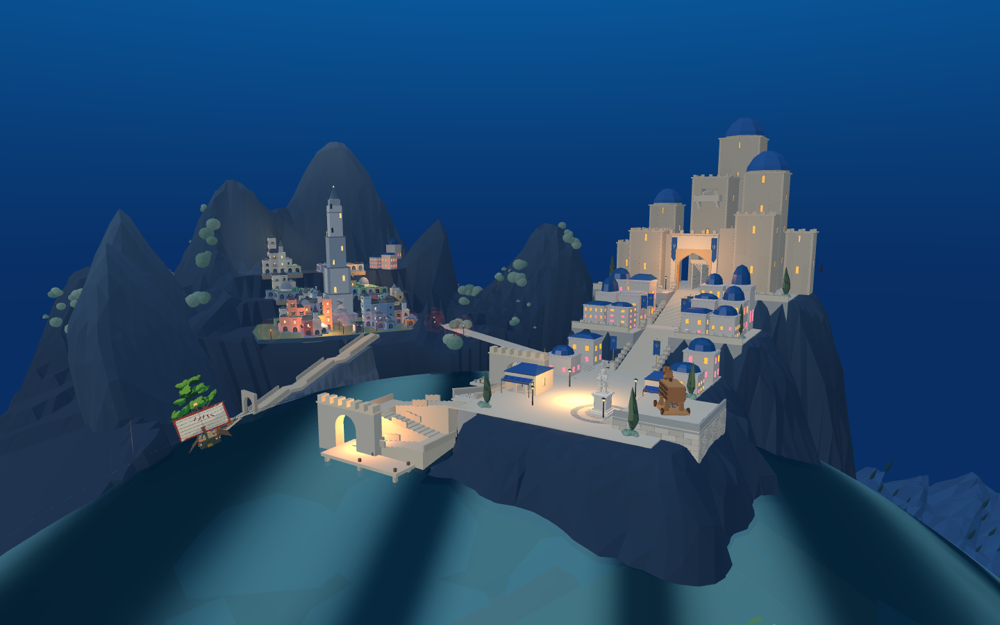
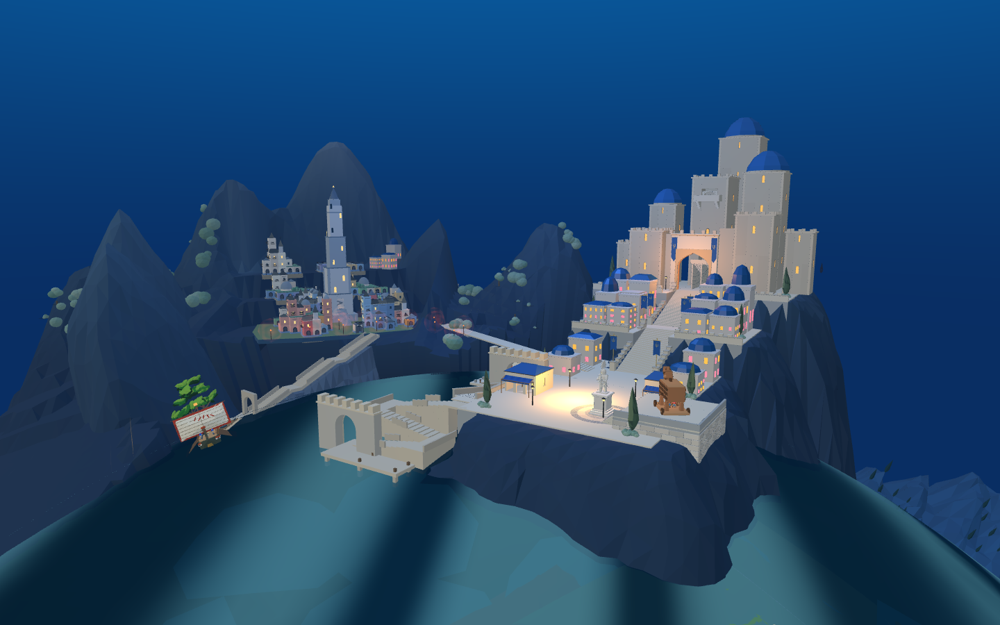
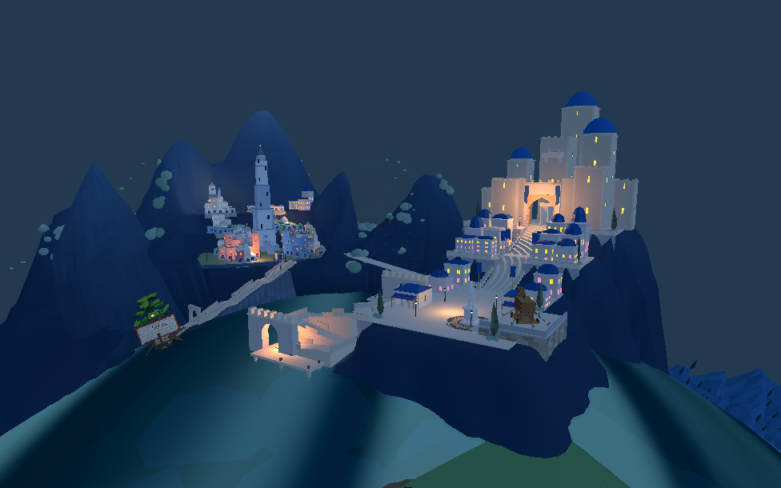
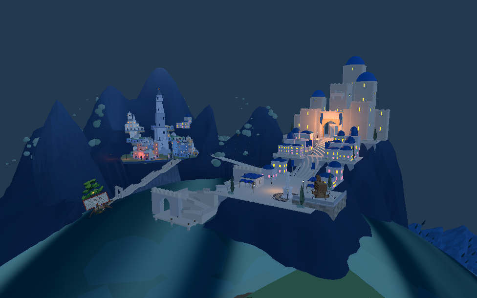

白天恢复与认可目标



目标中的连续滨水聚落、山坡植被和建筑细节仍明显更丰富，不能把这轮局部改善视作整体复刻完成。
旧城照明从下城集中改为上、中、下分布；新城将一组大范围冷光改为岸门暖光，广场局部过亮适当收敛。两端使用同一组灯位，并各自校准强度。
范围说明：这是布光迭代，整体重构尚未完成。临水建筑层次、植被、最终步态及战斗衔接还需继续；默认布局仍未切换。

改前

改后

改前

改后


目标中的连续滨水聚落、山坡植被和建筑细节仍明显更丰富，不能把这轮局部改善视作整体复刻完成。
昼夜开关及灯位检查通过。短测帧间隔中位数前后均约 33 毫秒，不能据此认定所有设备性能达标。Web 检查 · Godot 检查